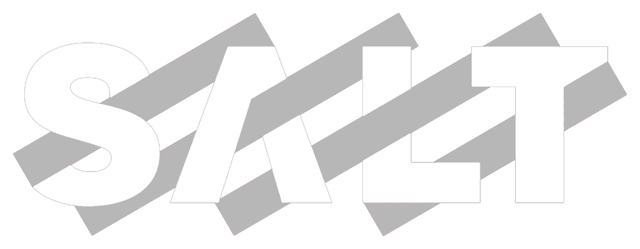
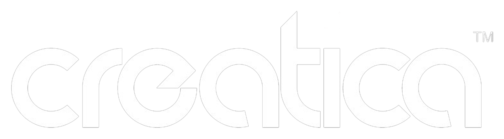
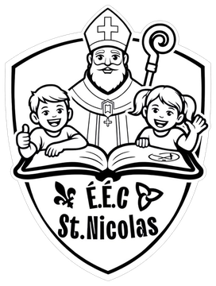
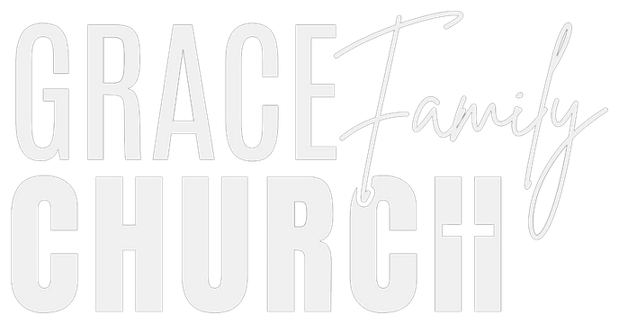

Selected work and about
Selected work
An art director based in Toronto, built on one idea that stirs the water.
I studied Creative Advertising at Humber and started a clothing brand, Maracousi, back in high school. I won Humber's Xbox pitch competition, then studied abroad in Copenhagen, Denmark, where I pitched an app to investors and received a 2 million Danish kroner offer ($400K CAD) to develop it. Back in Canada, I created a logo for a French elementary school. The work I mentioned lives throughout this portfolio.
Outside of work, I'm a huge foodie, everywhere from Michelin-starred restaurants to Sweden's Disgusting Food Museum, and I'm rarely without headphones, constantly exploring new music and making some of my own along the way.










Awards andachievements
- 1st Place: Xbox Marketing Pitch Competition Humber Sprint Week · Salt XC
- 2M DKK ($400K CAD) investor offer: app pitch KEA Copenhagen exchange
- 3rd Place: GelaSkins campaign competition Cash prize · Real Toronto client brief
- 3rd Place: Jane and Finch Collective Community campaign competition
Have a rolein mind?
Youssef Said · Art Director · Toronto, ON © 2026 · Back to the surface ↑